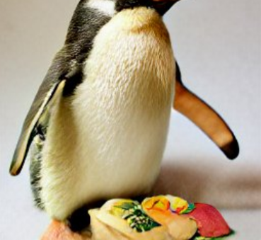

Penguin Sushi

Image Source
Penguins have flippers. This is the main reason they don't make sushi.
Luckily, you can help.
Ingredients
- 1 Penguin (up to 10 lbs, adult chinstrap)
- 1/2 Lb Sushi-Grade Raw Salmon
- 2 Cups Sushi Rice, Prepared
- 6 Sheets Nori
- 4 Oz Cream Cheese
- 1 Avocado
- 1 Bamboo Mat
Directions
- Place penguin on countertop
- Place seaweed on mat and cover with an even layer of rice
- Layer salmon onto the rice
- Restrain the penguin
- Add cream cheese and avocado
- Roll tightly (the sushi, not the penguin)
- Unleash the penguin. That's a good penguin!
Back To Recipes